Instructions
This page is designed to get you started using the applet. The applet should be open. The step-by-step instructions on this page are to be done in the applet. You may need to toggle back and forth between instructions and applet if your screen space is limited.
 Observing the Motion of
the Weighted Spring
Observing the Motion of
the Weighted Spring
 The Motion of the
Weighted Spring as Projected Uniform Circular Motion
The Motion of the
Weighted Spring as Projected Uniform Circular Motion
 Graphs of Position, Velocity,
Acceleration vs. Time
Graphs of Position, Velocity,
Acceleration vs. Time
 Position, Velocity,
Acceleration Vectors
Position, Velocity,
Acceleration Vectors
Exercise 1. Reset  the applet.
the applet.
You will see something similar to Figure 1 below: a stretched spring with a weight attached to it. The weight will be at its equilibrium position. The spring constant will be set to k = 80 N/m, the mass of the suspended block (weight) to m = 1.25 kg (the spring is assumed to be massless), and the amplitude of the motion to A = 0.20 m.
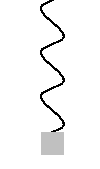
Figure 1
There are three sliders to vary the spring constant k, the mass m of the suspended weight, and and the amplitude A of the oscillation. In the following Exercises 2 to 4 you will be asked to examine the dependence of the system's period on these three variables. The period is the time required for the motion to go through one full cycle, from the top to the bottom and back to the top.
Display the Data box, and PLAY the motion. Measure the period of the motion using the time t elapsed shown in the Data box. PAUSE the motion after one or several cycles have been completed.
Exercise 2. Continuing from Exercise 1, REWIND the applet to set the system back to its initial position. Then change the spring constant from k = 80 N/m to k = 200 N/m.
Making the spring constant stiffer is indicated visually by a thickening of the spring and by a shortening of the spring. The applet is designed to keep the weight in the center of the applet window when the system is in equilibrium. Thus, as the spring gets stiffer (k increases), the point from which the spring is suspended moves down towards the fixed equilibrium point. The point of support is above the applet window and therefore invisible, but you will be able to see a downward movement of the turns of the spring as the spring gets stiffer.
Observe the oscillatory motion for k = 200 N/m, and measure its period.
Comment. The oscillation should be faster than before. To get better values for the period, measure the time elapsed during ten uninterrupted cycles.
Exercise 3. Continuing from Exercise 2, REWIND the applet and change the mass of the suspended weight from m = 1.25 kg to m = 2.00 kg.
Increasing the mass of the suspended weight is represented visually by an increase in the size of the suspended weight. Increasing the mass will also stretch the spring (the invisible point of suspension will move upward).
Observe the motion with m = 2.00 kg, and measure its period.
Comment. The oscillation should be a bit slower than before. Again, to get better values for the period, measure the time elapsed during ten uninterrupted cycles.
Exercise 4. Continuing from Exercise 3, REWIND the applet and change the amplitude of the motion from A = 0.20 m to A = 0.30 m. Observe the motion and measure its period.
Comment. You should be able to observe an oscillation with a larger amplitude than before, but unchanged period.

Exercise 1. RESET the applet, and display the green reference circle by pressing the Reference Circle button 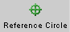.
Move the mouse cursor onto the small grey circle (reference point), which initially is at the point marked "0, 2p" on the green reference circle. When the cursor is over this point and changes into a pointing hand, drag the reference point to approximately the position shown in Figure 2 below. Notice how the length of the weighted spring is adjusted accordingly.
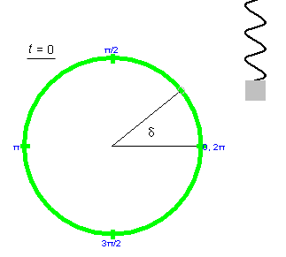
Figure 2
By moving the reference point in this manner, you can set the starting point of the motion of the weighted spring. You can also drag the suspended weight up or down. However, this will vary the position of the reference point only throughout the right half of the reference circle.
The angle formed between the two grey lines in Figure 2 is called the phase angle. Its value at the start of the motion at t = 0 is denoted d. The angle d is indicated in Figure 2. Its value at time t is denoted q(t). Thus, q(0) = d. The initial phase angle d is also called the phase.
The phase angle q(t) at a general time t is illustrated in Figure 3 below.
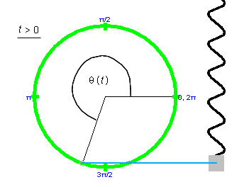
Figure 3
Exercise 2. Continuing from Exercise 1, PLAY the motion and observe that the reference point on the reference circle is always on the same level as the oscillating weight. PAUSE the motion and click the Projection toggle button 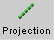.
A blue horizontal line, illustrated in Figure 3, will connect the reference point to the center of the weight. Resume the motion, and observe the correspondence of the uniform circular motion of the reference point and the oscillatory motion of the weight as indicated by the connecting blue line.
Exercise 1. RESET the applet. Start the motion at t = 0 with a phase d as in Figure 2, pause it at the point shown in Figure 3, and display the position vs. time graph, y vs. t. You will get a graph like that illustrated in Figure 4 below. y is the position of the center of the weight. The y-axis increases in the upward direction, with y = 0 at the equilibrium position.
To display the graph, press the Graphs toggle button 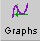 and select "Position" from the panel that opens up. For details on using the Graph panel, please see Point 6 in Help.
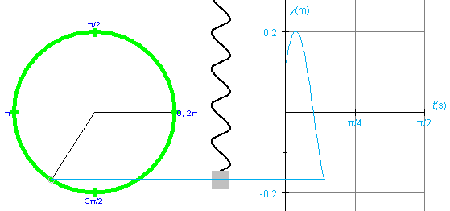
Figure 4
Observe that on the horizontal axis the time t is plotted in seconds (s). Don't be mislead by the unusual divisions labeled p/4 and p/2. These are in seconds, not in radians. Thus, the point where the y vs. t graph crosses the t-axis for the first time is at a time slightly before t = p/8 s. The reason for dividing the time axis in this way is that the expression for the period T of the oscillating spring is
T = 2p (m/k).
(m/k).
The presence of p in this expression makes it natural to divide the time axis into segments that are multiples (or fractions) of p.
Also observe that the y vs. t graph in Figure 4 does not start at y = 0 at t = 0. This is so because the phase d is unequal to zero. Also notice that the maximum y-value is equal to the amplitude, A = 0.20 m. (This amplitude is the applet's default value. It is assumed that you do not change the amplitude before starting the motion.)
Exercise 2. Continuing from Exercise 1, display the velocity vs. time graph, in addition to the position vs. time graph. Hide the reference circle to create more room, and arrange the two graphs as in Figure 5 below, with the graph of velocity vs. time on the left and the graph of position vs. time on the right. Move one graph at a time by selecting only that graph's movability checkbox in the Graph Panel.
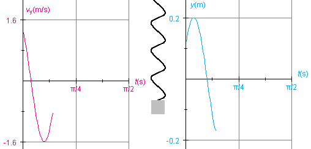
Figure 5
Note that, since the graphs in Figure 5 have been moved, their time axes are no longer aligned with the weight's equilibrium position.
Erase the graphs, using the Reset button  in the
Graph panel (not the main Reset button), REWIND the applet, and
PLAY the motion again to draw some fresh graphs.
in the
Graph panel (not the main Reset button), REWIND the applet, and
PLAY the motion again to draw some fresh graphs.
Exercise 3. Continuing from Exercise 2, hide the velocity vs. time graph, and display the acceleration vs. time graph instead. Keep the position vs. time graph displayed. REWIND the applet. Then PLAY the motion, and observe the graphs as they are being drawn. Ignoring the difference in amplitude, the two graphs should differ from each other merely by an overall sign. When the position vs. time graph goes up, the acceleration vs. time graph goes down, and vice versa.
Exercise 1. RESET the applet, display the reference
circle and the position vector. Display the vertical component
of the position vector by selecting the Components button  . This component vector is the weight's position
vector relative to the weight's equilibrium position.
. This component vector is the weight's position
vector relative to the weight's equilibrium position.
Display the horizontal blue line through the tips of the two vectors and the center of the weight by selecting the Projection button .
PLAY the motion and PAUSE it when the revolving point is in the third quarter, at a phase angle q somewhere between p and (3/2)p rad. You should obtain a display like that in Figure 6 below.
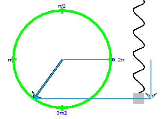
Figure 6
Exercise 2. Vectors can be drawn anywhere (except for the position vector, which by definition is attached to a given origin). The "velocity at origin" and "velocity at particle" checkboxes in the vector panel allow you to realize two possibilities for displaying the velocity of the reference point.
Continuing from Exercise 1, hide the position vector and instead display the velocity vector both with its tail end attached at the origin and at the revolving reference point (particle). Also hide the horizontal projection line. You will see two velocity vectors and their vertical components displayed as in Figure 7 below.
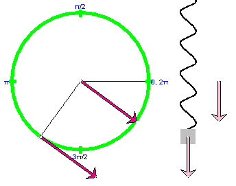
Figure 7
If the Components button is selected, the vertical component vectors of these two vectors are shown, as they are in Figure 7, with tail ends fixed at the weight's equilibrium level or attached to the oscillating weight, respectively. These component vectors are the velocity vector of the oscillating weight, drawn with its tail end attached at different points.
Exercise 3. Continuing from Exercise 2, uncheck the "velocity at origin" and "velocity at particle" checkboxes in the vector panel, and check the "acceleration at origin" and "acceleration at particle" checkboxes instead, one at a time. This will display the acceleration vector of the reference point and its vertical component, which is the acceleration of the oscillating weight. Again, with the first choice, the acceleration vector is attached to the fixed center of the reference circle and with the second choice it is attached to the moving reference point. Similarly the component vectors.
Note the color coordination throughout the applet: position (cyan), velocity (magenta), acceleration (orange). The component vectors are in paler colors.
Exercise 1. RESET the applet. Display the Data box by
selecting the Data toggle button  .
.
Click on the Data box, and drag it to a convenient location in the applet window.
Display the green reference circle, and drag the reference point until the phase d is equal to 0.60 rad. The value is displayed in the Data box. PLAY the motion until the phase angle q(t) has a value close to 4.0 rad. This should happen at a time close to t = 0.42 s if you did not change any of the applet's default settings. Figure 8 below shows values close to the ones you should find displayed in your Data box.
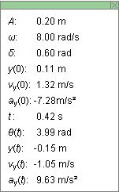
Figure 8
The top half shows the constants and initial conditions for the motion, the bottom half the values of the variables at time t.